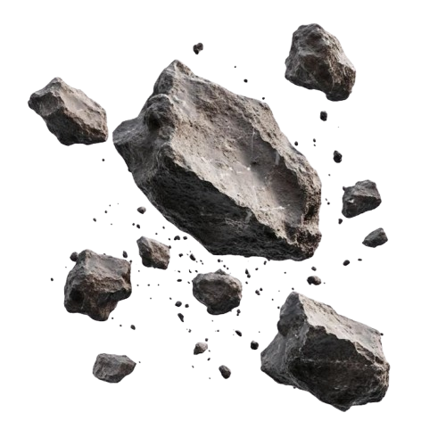
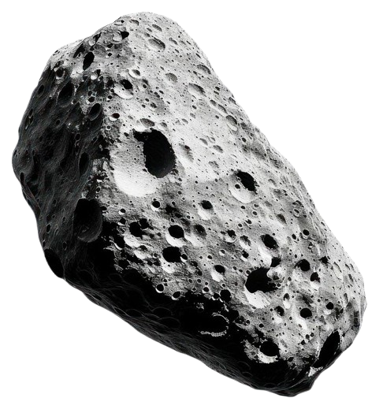
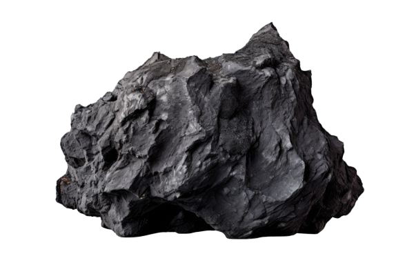
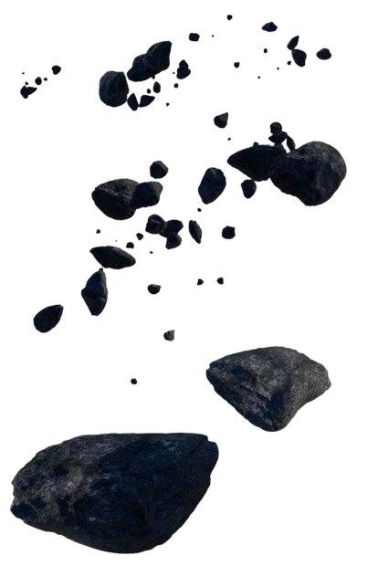
 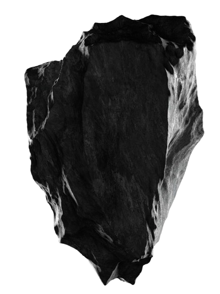
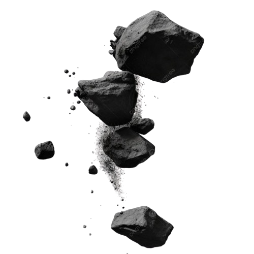
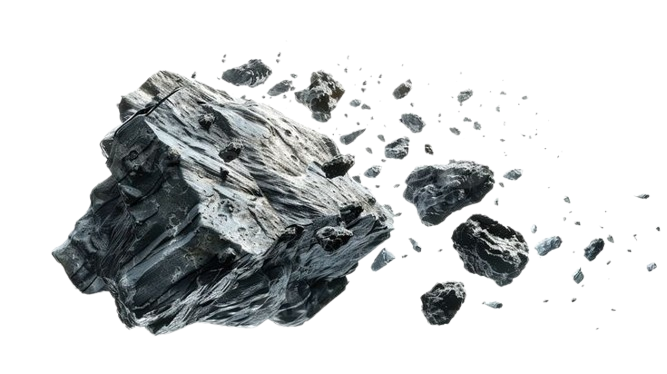
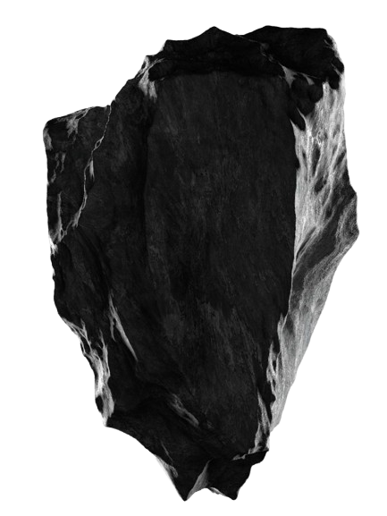
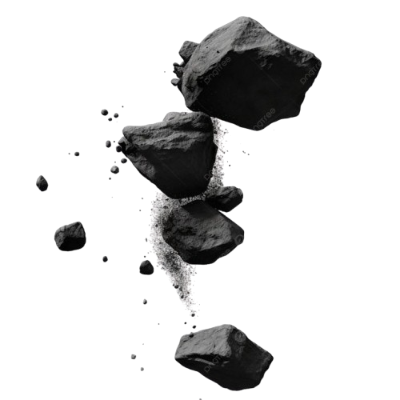
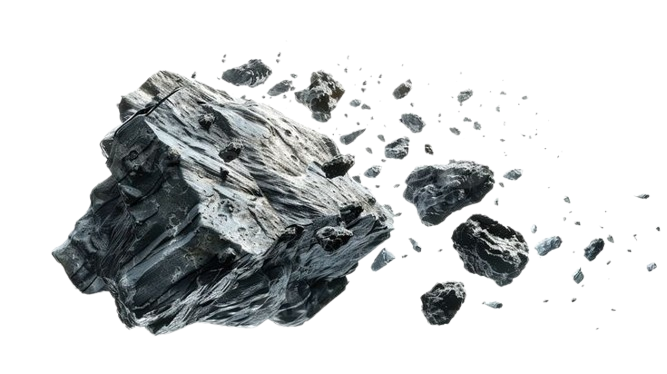
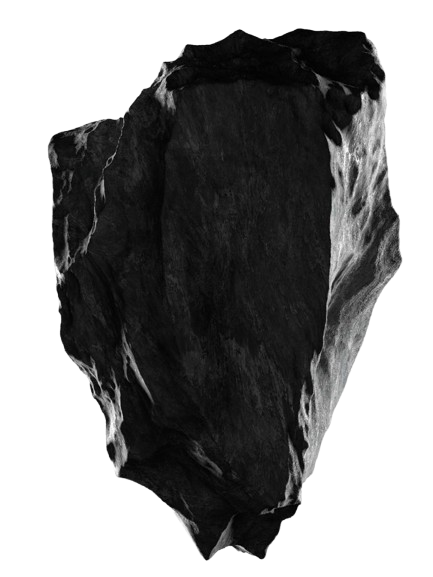
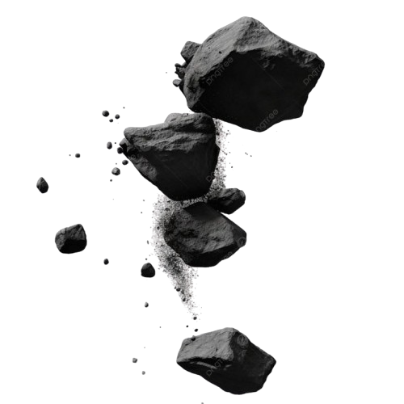
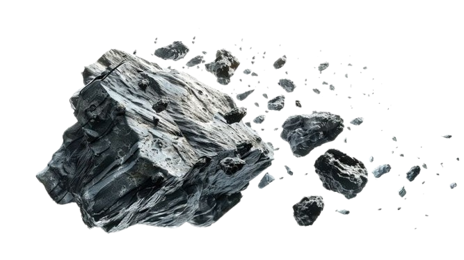
Journey Through Parallax
Scroll down to explore the depths
↓
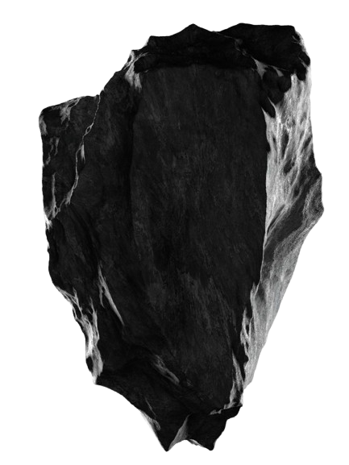
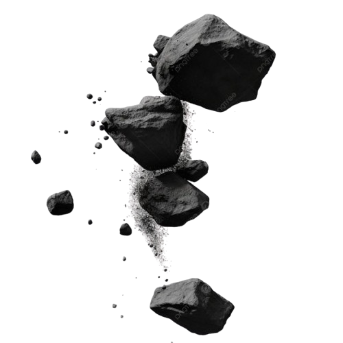
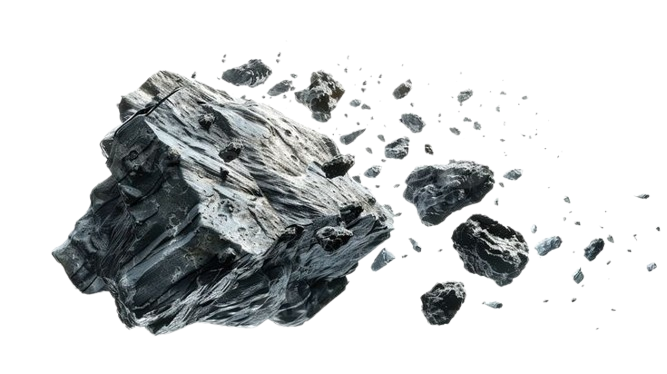
Scroll down to explore the depths
Parallax scrolling creates an illusion of depth by making background images move slower than foreground images. This technique has been used for decades in video games and has now become a popular web design trend.
As you scroll through this page, notice how different layers move at varying speeds, creating a three-dimensional effect that draws you deeper into the visual narrative.
Objects closer to us appear to move faster than distant objects when we move. This principle is fundamental to how we perceive depth in the real world.
By dividing the scene into multiple layers and animating them at different rates, we create the illusion of a three-dimensional space on a two-dimensional screen.
Parallax effects guide the user's attention and create memorable, engaging experiences that encourage exploration and interaction.
This page uses multiple parallax layers working in harmony:
This parallax experience is crafted using pure HTML5, CSS3, and vanilla JavaScript - no libraries required. The implementation prioritizes performance with requestAnimationFrame for smooth 60fps animations.
Modern layouts with Flexbox and Grid, smooth transitions, and responsive design
Optimized parallax calculations using requestAnimationFrame for buttery-smooth scrolling
Fully responsive design that adapts to any screen size and disables effects on mobile for performance
The magic of parallax scrolling lies in the journey itself. Each scroll reveals new layers, new perspectives, and new ways of seeing the same scene.
Notice how the floating rocks drift by at different speeds - some quickly passing in the foreground, others slowly drifting in the distance. This layered movement creates a sense of traveling through a three-dimensional space.
Parallax scrolling transforms a simple scroll gesture into an immersive journey. It's not just about aesthetics - it's about creating an emotional connection with your audience through motion and depth.
Whether you're building a portfolio, telling a brand story, or creating an interactive experience, parallax scrolling adds that extra layer of polish that makes your work memorable.
This technique has evolved from simple two-layer effects to complex multi-layer scenes with dozens of independently moving elements, each contributing to a cohesive visual narrative.